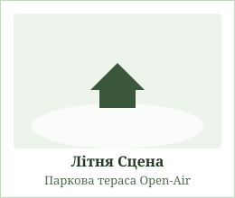

Мої вітання усім шанувальникам класичної музики
Інформація про концерт
Визначення «симфонічний концерт» століттями викликало трепетне ставлення серед поціновувачів музики. Це свято звуку, яке об'єднує класичну гармонію та сучасну експресію. Якщо ми поглянемо на історію оркестрового мистецтва, то побачимо, як поступово народжувалися ці безсмертні мелодії. Концерт «Симфонія Світла» покликаний відкрити слухачам нові грані знайомих шедеврів.
У програмі урочистого вечора прозвучать як драматичні пасажі світових класиків, так і авторські аранжування саундтреків сучасного кінематографа. Понад 70 інструментів одночасно створять неповторну звукову палітру під склепінням зали.
Новини культурного життя
-
Відкриття 98-го концертного сезону:
- Прем'єра нової симфонічної сюїти
- Виступ запрошених солістів із Відня
- Серія вечірніх акустичних концертів
- Благодійний проєкт «Музика заради перемоги та надії».
- Встановлення інноваційного освітлення сцени та сучасних мікрофонів.
- Майстер-класи для молодих виконавців від провідних майстрів сцени.
Сторінка із розташуванням
План розташування залів комплексу (наведіть курсор на зображення зали):
Велика Зала
Головна сцена на 1200 місць. Призначена для масштабних симфонічних полотен, хору та урочистих концертів.
Камерна Зала
Затишний простір на 350 слухачів з унікальною природною акустикою для скрипкових та фортепіанних вечорів.

Літня Сцена
Відкритий парковий майданчик для виступів під зорями в теплу пору року. Свіже повітря та приємна атмосфера.
Інформація про виконавця
Багатьом слухачам може здатися дивовижним той факт, що за кожним бездоганним виконанням стоять сотні годин репетицій та натхненної праці диригента. Головний диригент оркестру — народний артист, лауреат міжнародних конкурсів, який керував виступами у найвідоміших залах Європи.
Його манера диригування вирізняється особливою пристрастю та тонким відчуттям темпу. Разом з оркестром вони створюють справжнє диво, де кожен звук торкається найглибших струн людської душі.